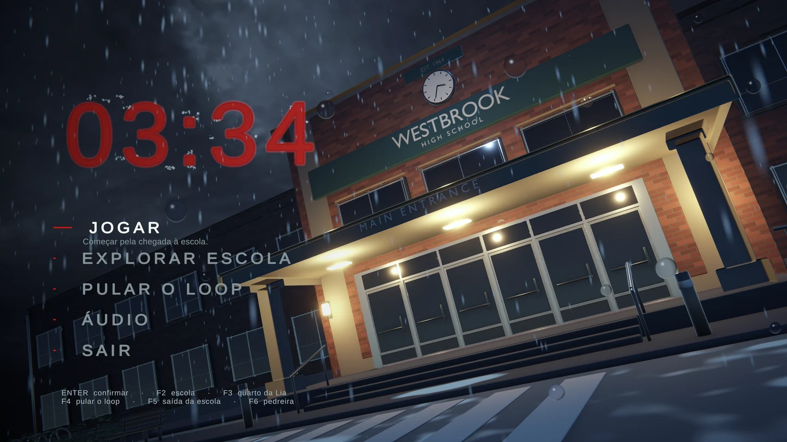
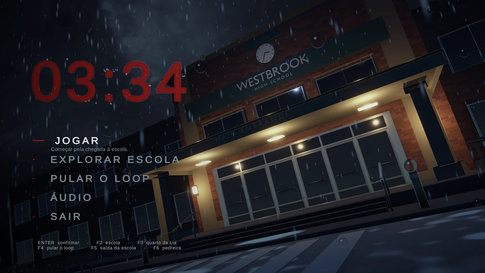
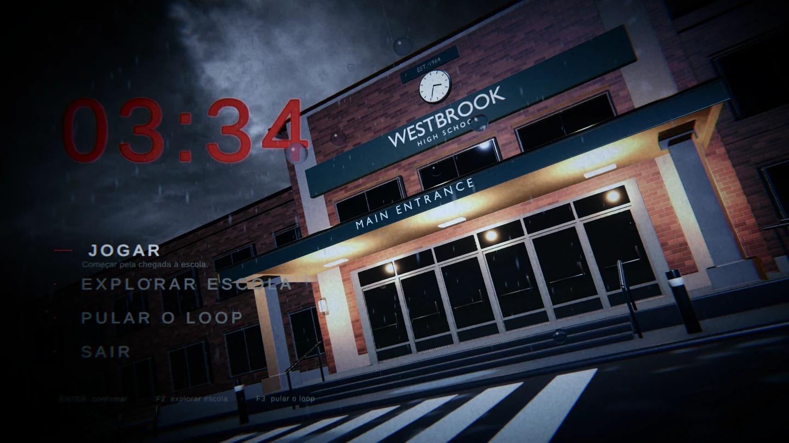
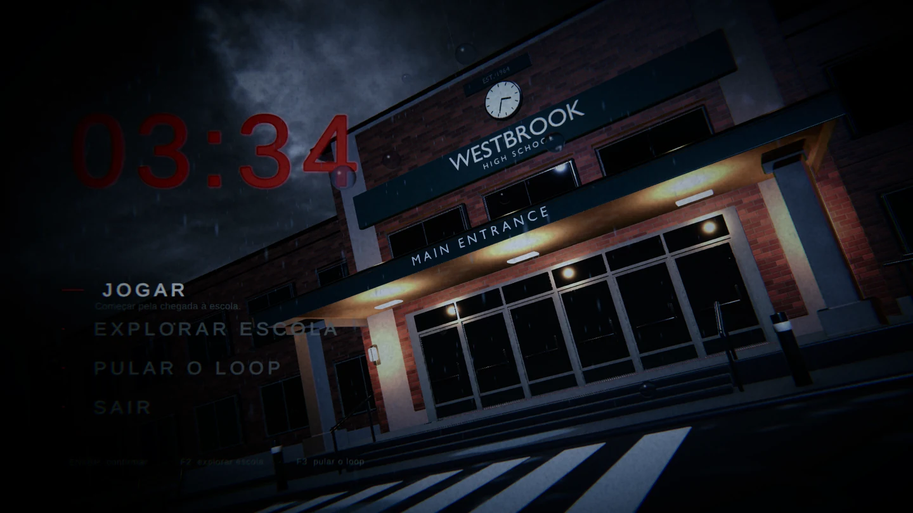

Entrega de
A fachada do menu entre relâmpagos
A escola aparece logo na tela inicial de 03:34. Escurecemos a rua e a fachada para dar mais destaque à luz da entrada. No Mac, corrigimos uma falha que podia deixar o primeiro clarão preso na tela.
A luz da marquise aponta para a entrada
A exposição ganhou um ajuste próprio no menu. Entre os relâmpagos, o céu e o asfalto ficam mais escuros. A luz quente sob a marquise ainda desenha a porta, enquanto o título vermelho e as opções do menu seguem legíveis.
O primeiro par foi capturado em 4K no aplicativo macOS, entre relâmpagos.


O primeiro clarão volta a apagar no Mac
Na abertura pelo Metal, o primeiro quadro podia chegar com um intervalo tão grande que o relógio da animação perdia precisão. O clarão acendia e podia ficar preso sobre a escola. Limitamos quanto tempo o relógio do menu pode avançar a cada quadro, para que a animação siga até a luz apagar.
Este par, capturado no Editor, mostra a fachada durante um clarão em cada versão.


Como conferimos
O teste automatizado simulou um primeiro quadro com um intervalo equivalente a quase seis dias. Acompanhou a animação e confirmou que o clarão ganhou força e voltou a zero. No executável macOS, iniciamos uma partida pelo menu, passamos pelas duas primeiras mensagens do celular e seguimos até a porta interna da escola.